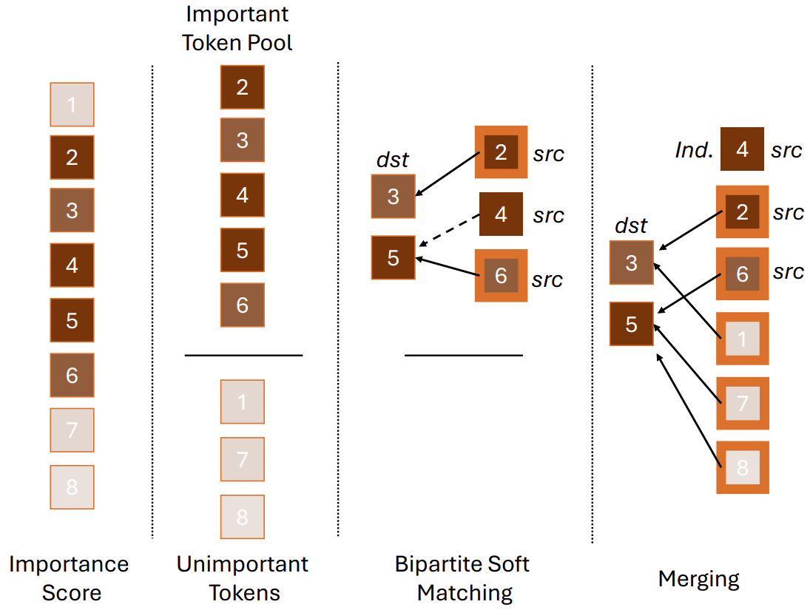
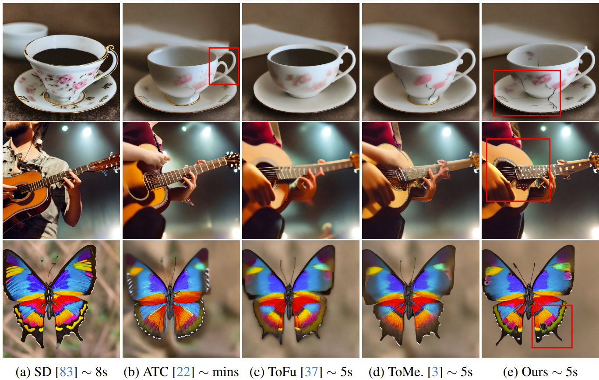
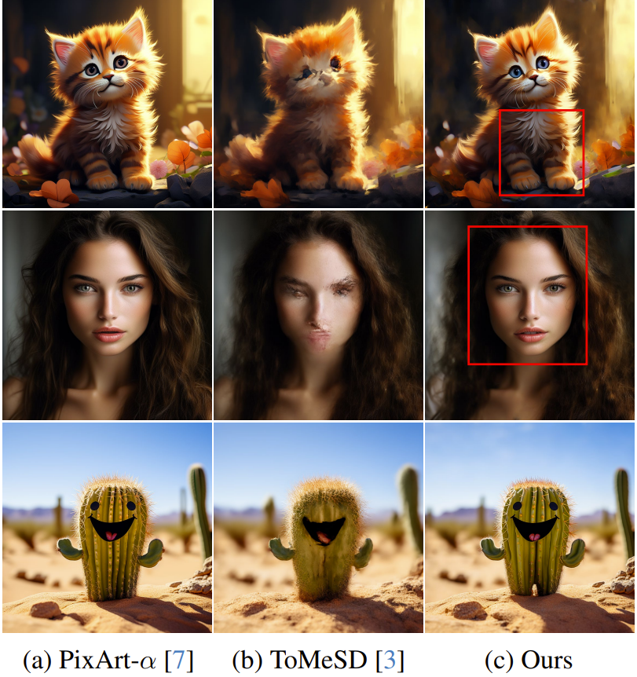
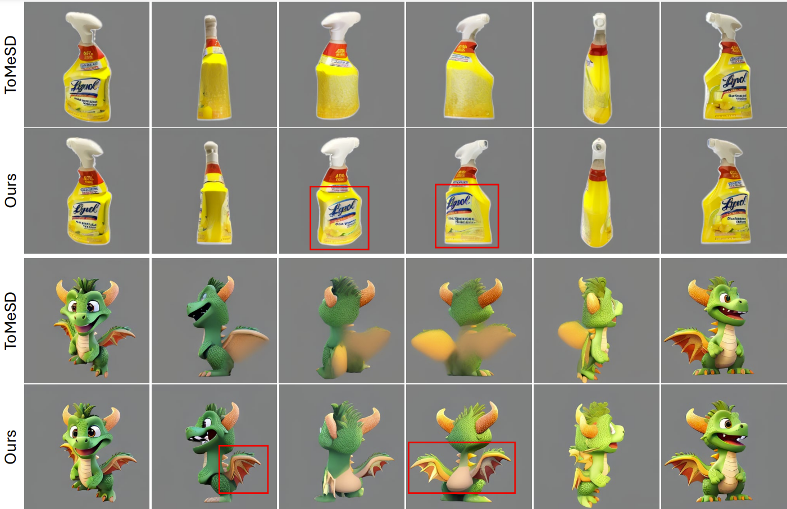

Importance-Based Token Merging for Efficient Image and Video Generation
ICCV 2025
Haoyu Wu, Jingyi Xu, Hieu Le, Dimitris Samaras
Stony Brook University
Abstract
Token merging can effectively accelerate various vision systems by processing groups of similar tokens only once and sharing the results across them. However, existing token grouping methods are often ad hoc and random, disregarding the actual content of the samples. We show that preserving high-information tokens during merging—those essential for semantic fidelity and structural details—significantly improves sample quality, producing finer details and more coherent, realistic generations. Despite being simple and intuitive, this approach remains underexplored.
To do so, we propose an importance-based token merging method that prioritizes the most critical tokens in computational resource allocation, leveraging readily available importance scores, such as those from classifier-free guidance in diffusion models. Experiments show that our approach significantly outperforms baseline methods across multiple applications, including text-to-image synthesis, multi-view image generation, and video generation with various model architectures such as Stable Diffusion, Zero123++, AnimateDiff, or PixArt-\(\alpha\).
Method
Overview. We propose an importance-based token merging method. The importance of each token can be determined by the magnitude of classifier-free guidance. These scores, visualized with colors ranging from light to dark (indicating less to more important tokens), are used to construct a pool of important tokens. We randomly select a set of destination (dst) tokens from this pool and the remaining important tokens become source (src) tokens. Bipartite soft matching is then performed between the dst tokens and src tokens. src tokens without a suitable match are considered independent tokens (ind.). All other src tokens and unimportant tokens are merged with the destination tokens for subsequent computational steps.
Results
Qualitative comparison of text-to-image generation.

Token merging for diffusion transformer.

Qualitative comparison of multi-view diffusion.
Comparison of text-to-video diffusion.
Acknowledgements
- This work was supported in part by the NASA Biodiversity Program (Award 80NSSC21K1027), and NSF Grant IIS-2212046.
- The website template was borrowed from Mip-NeRF 360 and VolSDF.